MultiMessenger puts WhatsApp, Telegram, Gmail, Discord, ChatGPT and more than twenty other services in one sidebar. Every service keeps its own login, and you decide which ones go through a proxy.
Free and open source (MIT). Windows 10 and 11. Windows may show a SmartScreen warning because the app is not code-signed; see the questions below.
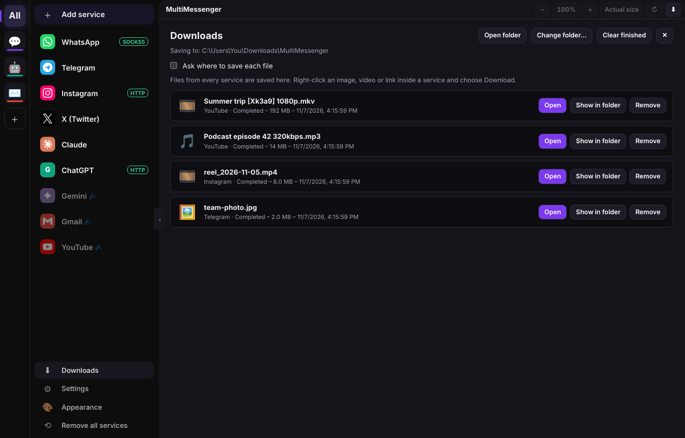
Pick a service from the list and sign in. Each one runs in its own isolated session, so you can add the same service twice and use two accounts side by side.
Anything else works too: choose Web app (custom URL), type the address, and it gets its own login, icon and proxy like the others. Skype for Business and Mattermost ask for your organization's server address.
Send WhatsApp through one server, leave Gmail on your normal connection, and put Instagram on a different one. Each service has its own switch.
127.0.0.1 and 8080.Need a second account? Add the service again, or open its settings and choose Sign out & clear data to start fresh. Proxy settings are kept.
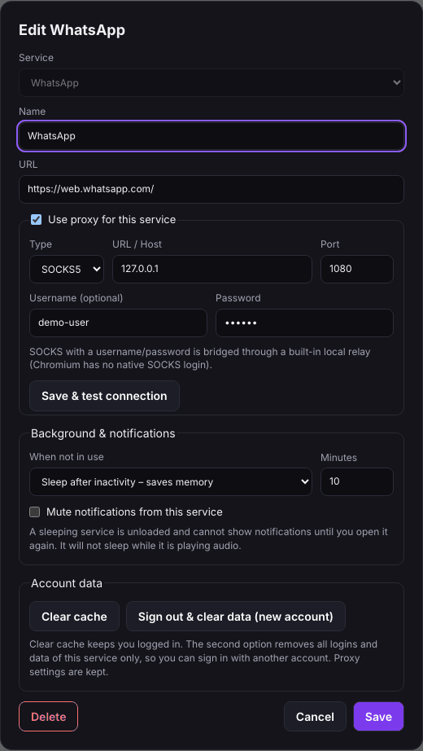
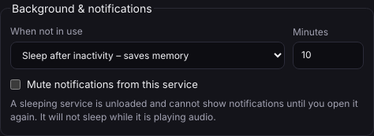
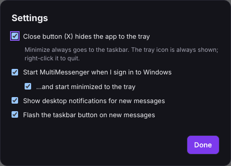
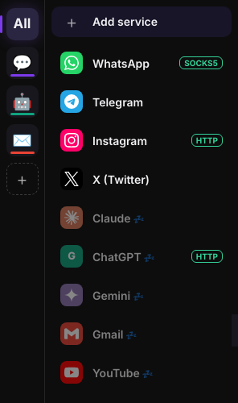
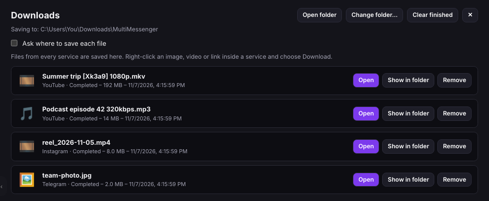
Open Appearance to switch theme and drag the icon size from 16 to 64 pixels. Changes apply at once and are remembered.
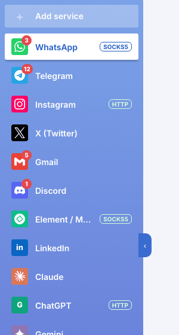
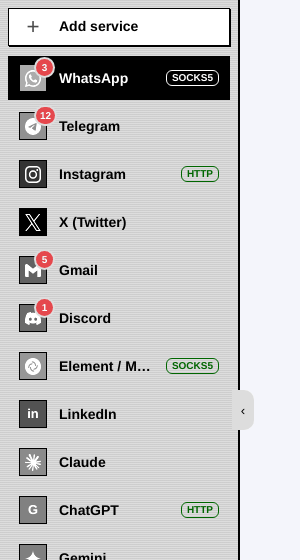
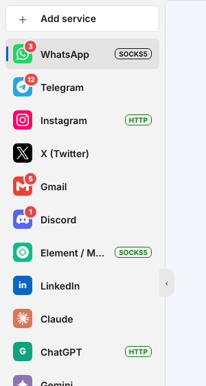
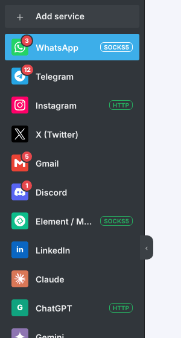
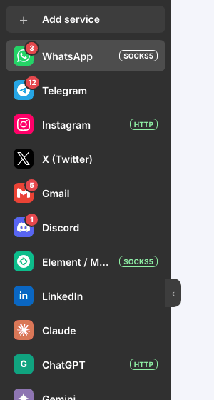
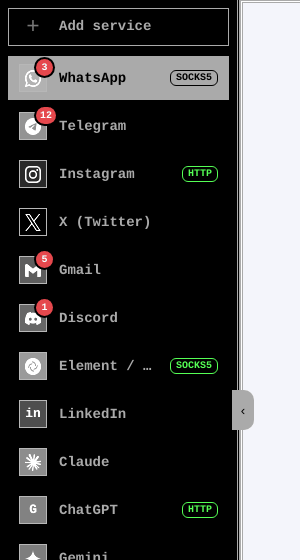
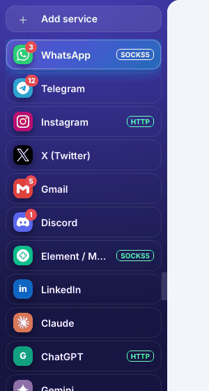
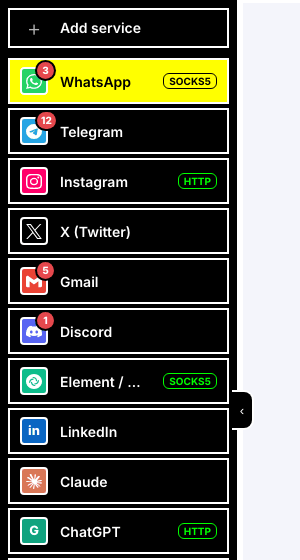
There are also Dark (the default), Xfce, Plan 9, and 2-bit, 8-bit and 16-bit color. Themes restyle the app itself; the websites inside keep their own look.
You need Node.js (current LTS) and Git.
# download the project
git clone https://github.com/nissay87/MultiMessenger.git
cd multimessenger
npm installNewer npm versions block Electron's download step. If npm start says Electron failed to install, run these two commands once:
npm install-scripts approve electron
node node_modules\electron\install.jsIf the download stalls, your network may be blocking GitHub. Set ELECTRON_MIRROR=https://npmmirror.com/mirrors/electron/ first and run the second command again.
npm startOpen the terminal as Administrator, or turn on Developer Mode in Windows, so the build tool can unpack its helpers. Files appear in the dist folder.
npm run dist # installer (.exe)
npm run dist:portable # single portable .exe
npm run dist:msi # .msi installerYes. MultiMessenger is open source under the MIT license. You can read, change and share the code.
Each service is the real website running in its own Chromium session on your computer. Logins, cookies and settings are stored locally in %APPDATA%\multi-messenger. MultiMessenger has no accounts, no analytics and no server of its own. The only request it makes for itself is the exit-IP check, when you press Save & test connection.
The installer is not code-signed, because a signing certificate costs money. Choose More info, then Run anyway. If you prefer, build the app yourself from the source with the steps above.
Google and Facebook sometimes distrust embedded browsers. The app presents itself as normal Chrome, which usually works, but a provider can still refuse sign-in. This is outside the app's control.
Windows is the supported system. The code is Electron, so it can run from source elsewhere, but tray icons, taskbar badges and start-at-login are designed for Windows and have not been tested on other systems.
No. MultiMessenger is an independent project. Service names and logos belong to their owners and are used only to identify the services. Logos come from the Simple Icons project.